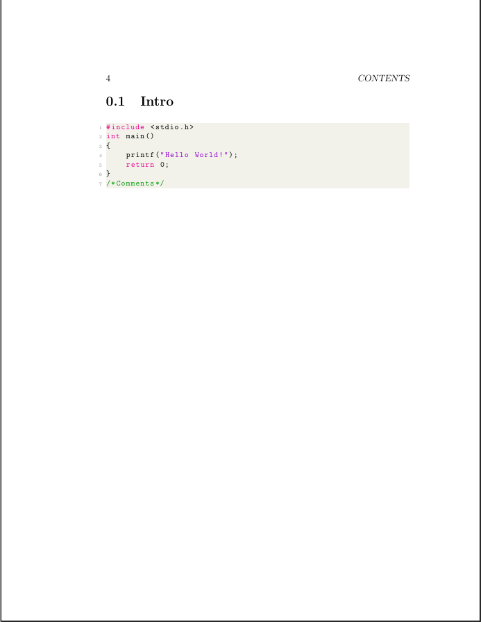

Code Template Example
In the last section we decided to create a project on the basics of golang, and chose to use the Code template. So let's specify the other parts of our project:
[Project]
author = "Mustafif"
title = "A Little Golang"
date = "\\today"
project_name = "Golang_Book"
template = "Code" #Make sure to have first letter upercased
[Document]
paper_size = "letterpaper"
font_size = 11 #font size number
document_class = "book"
packages = ["PhantomData", ""]
With that set, let's create our project:
# import assumes you're using config.toml
$ texcreate import
# check directory
$ ls
config.toml Golang_Book
# Go into Golang_Book
$ cd Golang_Book
# check directory
$ ls
Golang_Book.tex structure.tex
Now we have two files, and each serves a different purpose:
- Golang_Book.tex: This is the main file that will be compiled
- structure.tex: This is the file that will contain all packages and stuff like that
If we run pdflatex Golang_Book, we see this introductory pdf:

Let's change this to a Golang example:
- First in the
structure.texfile change\lstset{language=c}to\lstset{language=go} - Next we will give a simple example of creating a simple recursive fibonnaci program:
package main
import "fmt"
func main() {
var fib func(n int) int
fib = func(n int) int {
if n < 2 {
return n
}
return fib(n-1) + fib(n-2)
}
fmt.Println(fib(7))
}
So remove the C program and add the code in the lstlisting environment, as seen below:
% Code Template
% MKProjects TexCreate 2021
% MIT & GPLv2 License
\documentclass[11pt, letterpaper]{book}
\input{structure.tex}
\author{Author}
\date{\today}
\title{A Little Golang}
\begin{document}
\maketitle
\newpage
\tableofcontents
\newpage
\section{Intro}
% To use listings with code on text, use the following command:
\begin{lstlisting}
package main
import "fmt"
func main() {
var fib func(n int) int
fib = func(n int) int {
if n < 2 {
return n
}
return fib(n-1) + fib(n-2)
}
fmt.Println(fib(7))
}
\end{lstlisting}
% To use external code, use the following command:
%\lstinputlisting{file.c}
\end{document}
We could also save the code in a file and use \lstuiinputlisting{file.go}